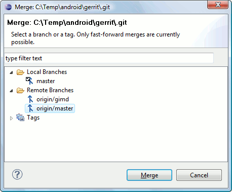

| Merging |

|
|

|
| Branching |
|
Tagging |
Merging
A merge incorporates changes from named commits (since the time their histories diverged from the current branch) into the current branch.
Merging a branch or a tag into the current branch
Note: Egit currently supports only fast-forward merges (see below).
In the Package Explorer or Navigator, open the context menu on a project node.
Select
Team > Merge...
Now the merge dialog opens:

On the dialog, select a branch or a tag you want to merge with your current branch. After pressing the Merge button,
the following scenarios can occur:
- Already up to date: Your current branch points to a commit that has the selected branch or tag as predecessor. In this case nothing is changed.
- Fast-forward: Your current branch points to a commit that is a predecessor of the selected branch or tag. In this case your branch is moved and points to the selected branch or tag; this new HEAD is checked out to the working tree. Fast-forward is very common when working with remote repositories: When a remote tracking branch is updated, the merge with the corresponding branch generally is a fast-forward. You can perform a pull by fetching the remote branch (e.g. origin/master) and merging it into the corresponding local branch (e.g. master).
- Real merge: When neither of the conditions above apply egit triggers a merge of the commits. This is not implemented yet.